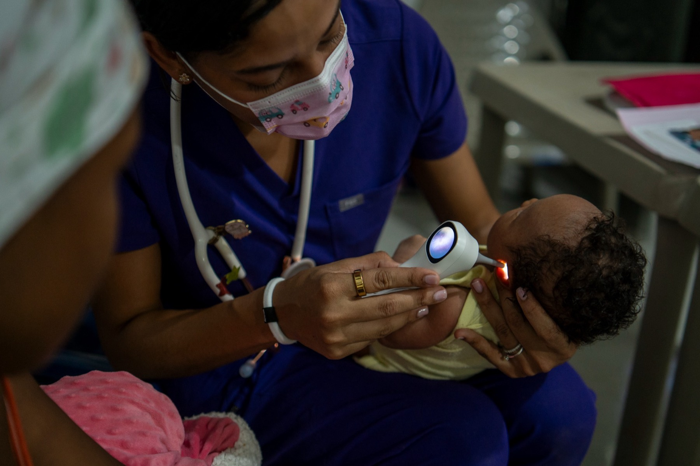
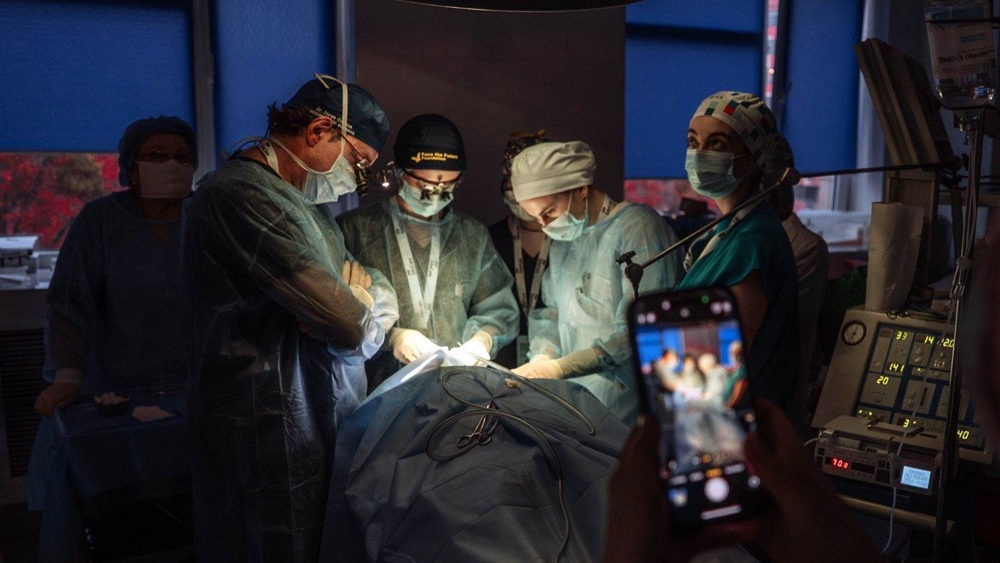
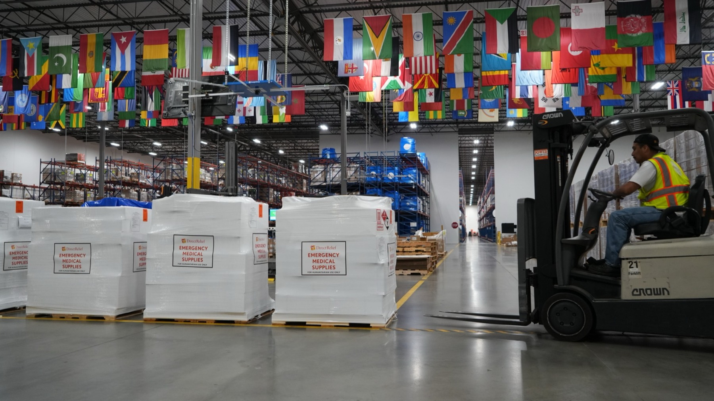
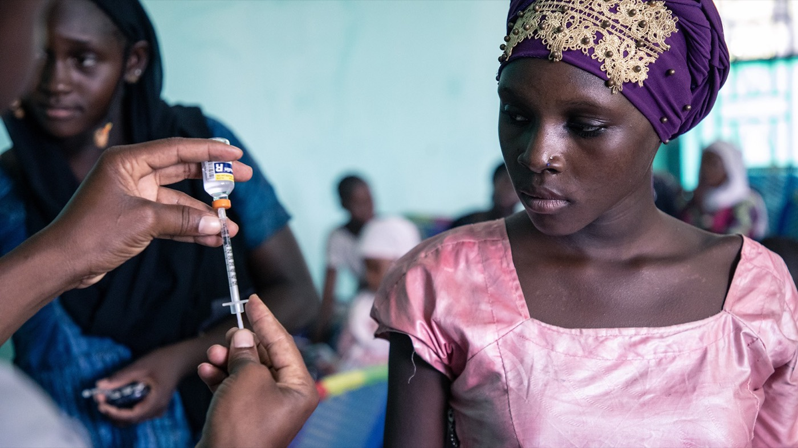

Direct Relief gets medical aid to people facing crisis or hardship, across all 50 states and more than 90 countries, regardless of politics or ability to pay.

Care provided by a local health professional in Colombia.
Charity Ratings, Explained
A percentage. A ranking. A letter grade. An accreditation. Each charity assessment answers different questions. See what each one measures and compare Direct Relief’s performance.
Charity Navigator
100%
Four-star rating
For 2026, Direct Relief earned its 16th consecutive four-star rating and a perfect score across all four beacons: program impact, financial stewardship, organizational leadership and planning, and workplace policies and compensation.
The lists use different comparison groups, revenue definitions, and calculations.
Compare the evaluation methods +
Charity Navigator evaluates more than finances; CharityWatch’s grade focuses on cash efficiency; Forbes publishes financial ratios; BBB tests compliance with accountability standards.
What each evaluation covers
Scroll horizontally to read all columns. Swipe left or right, or focus the table and use the arrow keys.
Evaluator
How the result is determined
Impact and effectiveness
Governance and transparency
Role of finances
Charity Navigator
Weighted 0–100 score, translated into zero to four stars.
Assesses impact, measurement and learning.
Assesses accountability, leadership, planning, workplace policies and compensation.
Financial health is one part of a broader evaluation.
CharityWatch
A+–F grade based on adjusted program spending and fundraising cost. Excess reserves can lower the grade.
Measures nonprofit efficiency.
Separate governance and transparency standards apply to Top-Rated status.
Cash-based financial efficiency determines the letter grade.
Forbes
Publishes charitable commitment, fundraising efficiency and donor dependency ratios.
The ratios measure financial efficiency.
Measures financial reports.
Financial ratios; its Top 100 list separately ranks private donations.
BBB Wise Giving Alliance
Accreditation means meeting all 20 accountability standards.
Requires periodic effectiveness assessment and board review; does not score the quality of outcomes.
Standards cover board oversight, public reporting, appeals and donor privacy.
Includes spending, fundraising, reserves and financial-reporting standards.
Comparison of charity evaluation methods
Which contributions count in fundraising efficiency?
The table shows which contributions each evaluator uses to calculate fundraising efficiency.
Scroll horizontally to read all columns. Swipe left or right, or focus the table and use the arrow keys.
Evaluator
Contribution base
Government grants
Donated goods
Program service revenue
Investment revenue
Charity Navigator
Total contributions reported on Form 990
Included
Included
Excluded
Excluded
CharityWatch
Adjusted cash contributions related to fundraising
Excluded
Excluded
Excluded
Excluded
Forbes
Private donations, including gifts in kind
Excluded
Included
Excluded
Excluded
Revenue included in fundraising efficiency contribution bases
Charity Navigator compares fundraising costs with contributions over three fiscal years. CharityWatch reports the cost to raise $100 in adjusted cash contributions. Forbes reports the share of private donations remaining after fundraising costs.
Program-spending ratios divide program expenses by total expenses. CharityWatch generally removes donated goods and services and reallocates joint fundraising costs. Forbes includes donated goods and services. Its donor-dependency ratio also uses the surplus or deficit, which can be affected by investment results.
Form 990 includes noncash property contributions but does not record donated services as contributions. Forbes’ accounting basis can include donated services. Government grants here means grants reported as contributions; government payments for services are a different category.
CharityWatch’s July 2025 assessment of Direct Relief, based on FY2024 financials, reports 90% program spending and $5 to raise $100. These are CharityWatch’s adjusted cash-based measures.
Medical material aid and financial assistance delivered.
Grants
$68.8M
Included in the $2.0B total aid delivered.
Defined Daily Doses
311.9MWhat defined daily doses measure
A defined daily dose represents an assumed average daily maintenance dose for a medicine’s main use in adults. It standardizes medicine volume; it is not a count of patients treated.
Deliveries
29,657
Shipments to healthcare providers in 92 countries, all 50 U.S. states and five U.S. territories.
Aid value per $1 of program delivery costs: $1,900 million ÷ $40.9 million ≈ $46.45, displayed as ≈46:1.
Program delivery costs per $100 of aid value: ($40.9 million ÷ $1,900 million) × $100 ≈ $2.15. This is the inverse of the same ratio. Both approximate ratios use the reported rounded figures of $1.9 billion in medical aid and $40.9 million in program delivery cost.
“Program delivery costs” refers to the Annual Report’s program implementation expense, which includes personnel, freight and transportation, contract services, packing materials, facilities and other program operating costs. It excludes cash grants and is broader than the cost of shipping alone.
Medical material aid is measured at reported accounting value, including donated medicines and supplies. Direct Relief records donated medicines at their estimated fair value. For FDA-approved medicines, the standard wholesale cost is used at the time of receipt. The ratio depends on this valuation basis.
Yaroslava in Lviv, October 2024. Photo: Nick Allen / Direct Relief.
Medicine that changes lives
A Treatment. A Future She Can Imagine
For Yaroslava Koshel, cystic fibrosis made even a short walk difficult. After receiving Trikafta through a partnership involving Vertex, Direct Relief and Ukrainian hospitals, she reported breathing more easily, regaining weight and being able to walk farther.
The program connects donated specialized treatment with the local clinicians who provide her care.
“Trikafta has given me the possibility to live for many more years.”
Care at Wheeling Health Right, November 2025. Photo courtesy of Wheeling Health Right.
Care close to home
An Inhaler Within Reach
At Wheeling Health Right in West Virginia, uninsured patients receive free inhalers donated by Teva through Direct Relief. A dependable supply lets the clinic dispense medicine during appointments and replace inhalers lost during floods.
Direct Relief responds to requests from local health providers and coordinates with public health agencies and other responders to avoid duplicated efforts and keep unneeded supplies from delaying aid.
Prepare
Position medical supplies before emergencies and help health facilities keep operating when power and services fail.
Respond
Get requested medicines, supplies and emergency funding to local health providers responding to a disaster.
Recover
Help health providers maintain treatment as communities recover, including care for patients whose ongoing medical needs cannot wait.
Preparedness in practice

A surgical team in Ukraine. Reliable electricity is essential to surgical care.
Ukraine: Keeping Care Available During Conflict
Reliable power protects care during conflict. In Ukraine, Direct Relief-supplied batteries maintain lighting in eight operating rooms at the National Cancer Institute in Kyiv during grid disruptions.
Puerto Rico: When the Power Goes Out, Care Must Continue
At Profamilias in Puerto Rico, staff once took medicines home to keep them refrigerated during hurricanes. With Direct Relief-funded solar installations, the clinics can keep medicines safely stored and continue seeing patients during outages, according to services manager Michael Domínguez.
Financial contributions and donated goods and services received. Excludes investment revenue.
$2.27B≈ 95%Donated medicines, supplies and other resources
$119.3M≈ 5%Financial contributions
Most reported support consists of donated medicines, supplies and other noncash resources. Financial contributions fund needs that product donations cannot meet, including purchases, delivery, grants and operations.
Donated products are recorded at estimated fair value under accounting standards. For FDA-approved medicines, Direct Relief uses product-specific Wholesale Acquisition Cost from RED BOOK at the time of receipt.
Support received · $2.391BFinancial contributions and donated goods and services received in FY2025.Audited statements
Total expenses · $2.309BAid distributed, program delivery costs, administration, fundraising and accounting adjustments such as expired inventory recorded in FY2025. Includes donated goods and services.Audited statements
Total aid delivered · $2.0BMedical material aid and financial assistance delivered in FY2025.Annual Report, pp. 7–8
Medical material aid · $1.9BThe medicines, supplies and equipment component of aid delivered.Annual Report, p. 45
Exact expense figures and accounting notes +
Scroll horizontally to read all columns. Swipe left or right, or focus the table and use the arrow keys.
Category
Cash-based ($M)
In-kind & other noncash ($M)
Total ($M)
Program services
121.624
2,171.658
2,293.282
Administration
12.369
0.150
12.519
Fundraising
3.322
0.148
3.470
Total
137.315
2,171.956
2,309.271
FY2025 consolidated expenses. All amounts in millions of dollars, to the nearest thousand.
Cash-based expenses are calculated by subtracting donated medical products distributed, inventory adjustments, contributed freight and services, and depreciation and amortization from total expenses. Those excluded amounts make up the noncash column. This is an adjusted expense comparison, not a statement of cash flows.
The Annual Report separately presents approximately $110.0 million for programs, $12.5 million for administration and $3.5 million for fundraising. That presentation includes some donated services and uses a different basis from the adjusted expense comparison above. Rounded amounts may not sum exactly.
spent on fundraising per $100 in financial contributions.
Cash-Based Program Spending
≈ 90%
of operating expenses supported programs.
≈ 90% Programs≈ 10% Administration & fundraising
How fundraising efficiency and program share are calculated +
Both three-year averages are Direct Relief calculations using combined FY2023–FY2025 totals, excluding in-kind expenses and depreciation. What “adjusted” means: The exclusions cover donated medical products distributed, write-downs of expired donated inventory, contributed freight and services, and depreciation.
Fundraising expense relative to financial contributions
FY2023–FY2025
Between July 2022 and June 2025, Direct Relief recorded $311 million in financial contributions. During that same period, adjusted fundraising expenses totaled $9.18 million—meaning it cost $2.95 to raise every $100. The calculation combines three years of expenses and support rather than averaging annual percentages.
Scroll horizontally to read all columns. Swipe left or right, or focus the table and use the arrow keys.
Fiscal year
Adjusted fundraising expense
Financial contributions
Expense per $100
2023
$2.689M
$120.864M
$2.22
2024
$3.171M
$70.895M
$4.47
2025
$3.322M
$119.262M
$2.79
Three years
$9.182M
$311.021M
$2.95
Fundraising cost per $100 in financial contributions, FY2023–FY2025
Financial contributions include donated securities and recorded pledges.
Program share of cash-based operating expenses
FY2023–FY2025
The calculation includes purchased medicines, paid shipping, disposal costs, grants, personnel and other program operating expenses. The shared exclusions above apply to the respective program, administration and fundraising categories.
Scroll horizontally to read all columns. Swipe left or right, or focus the table and use the arrow keys.
Fiscal year
Adjusted program expenses
Adjusted total expenses
Program share
2023
$119.491M
$131.462M
90.89%
2024
$106.475M
$118.514M
89.84%
2025
$121.624M
$137.315M
88.57%
Three years
$347.590M
$387.291M
89.75%
Program share of adjusted operating expenses, FY2023–FY2025
Three-year program share: $347.590 million ÷ $387.291 million = 89.749%, or ≈ 90%. This measures the allocation of adjusted expenses, not the percentage of contributions received that was spent on programs.
Direct Relief calculated these measures from Direct Relief and Affiliates’ consolidated audited statements and each year’s functional-expense detail. Source amounts are reported in thousands of dollars.
Local health professionals know their patients and identify what is needed. Direct Relief connects those requests with medical resources, distribution expertise and funding, so providers can focus on care.

Medical supplies staged for shipment at Direct Relief’s distribution center.
01
Start with Local Knowledge
The people providing care know what their communities need. Direct Relief works with local clinics and hospitals to identify gaps in care and the medicines and supplies that can help.
02
Turn Support into Medical Aid
Qualified healthcare organizations receive donated medical products at no charge. Direct Relief matches donated medicines and supplies with local requests. Financial contributions help fill gaps through purchases and grants.
03
Get Medicines There Safely
Medicine needs careful handling at every stage. With support from transportation and technology partners, Direct Relief manages storage, quality checks and specialized shipping to protect supplies and meet regulatory standards.
04
Help a Patient Get Treatment
The delivery becomes care in the hands of a local health professional—helping a child access insulin, a patient manage asthma or a community continue treatment after a disaster.

Life for a Child in Mali. The Tanzania example described here is a separate part of the same program.
Treatment That Continues, Month After Month
Each year, Direct Relief helps thousands of children with Type 1 diabetes access insulin and supplies through local health providers. Since 2011, it has supported Life for a Child, a program that helps children and young people access diabetes care.
In Tanzania, that support also includes refrigeration: Direct Relief funded and sourced pharmaceutical refrigerators for 78 public clinics in late 2025, providing space to safely store insulin for more than 6,200 children and young people.
“Direct Relief has exemplified true humanitarianism by providing medicines and medical supplies around the world—not through temporary aid, but sustained, patient-focused support uniquely tailored to each region.”
Jaeho YeomChairman, Seoul Peace Prize Cultural Foundation · April 2025Read about the award →
TIME Dreamer of the Year
Recognition presented by TIME in collaboration with American Family Insurance.
Ratings and recognition history: Explore dated announcements from Forbes, Charity Navigator, CharityWatch, Fast Company and other organizations, along with awards honoring Direct Relief’s humanitarian work, innovation and collaboration. Current evaluator profiles appear in the ratings section above.
Merit Award, General Design, Southern California ASLA Quality of Life Awards — Direct Relief Headquarters landscape project by CJM::LA in collaboration with DMHA2021
Green New Building Design Honor Award, U.S. Green Building Council Central Coast chapter — Direct Relief headquarters and distribution facility; DMHA and the project design team2020
Board Chair’s Award, Texas Association of Community Health Centers2020
Help Deliver Medicine Where It Can Do the Most Good
Your support helps equip health professionals caring for people across the United States and around the world—every day, during emergencies and through recovery.
Direct Relief does not accept government funding. Gifts designated for a specific emergency or program are used only for that purpose, including directly related administrative costs. Unrestricted support allows Direct Relief to respond to needs across its work.
Yes. Direct Relief holds a 100% four-star rating from Charity Navigator (its 16th consecutive year earning it), an A+ from CharityWatch, a No. 5 ranking on Forbes’ 2025 Top 100 U.S. Charities list with 100% fundraising efficiency, full accreditation from the BBB Wise Giving Alliance across all 20 standards, and Candid’s 2026 Platinum Seal of Transparency.
What percentage of my donation to Direct Relief goes to programs versus overhead? +
Based on FY2025 audited financials, 99.31% of Direct Relief’s $2.3 billion in total reported expenses supported medical aid programs, with administration at 0.54% and fundraising at 0.15%. On a cash-based basis (excluding donated goods, which make up most of the organization’s revenue), roughly 90% of operating expenses supported programs across FY2023–FY2025.
How much does it cost Direct Relief to raise $100 in donations? +
Across FY2023–FY2025, Direct Relief spent $2.95 to raise every $100 in financial contributions, based on combined three-year totals of $9.18 million in adjusted fundraising expenses against $311 million in financial contributions. CharityWatch’s independent FY2024 assessment calculated a similar figure of $5 per $100 raised using its own adjusted cash-based method.
How much medical aid does Direct Relief deliver compared to its operating costs? +
In FY2025, Direct Relief delivered $46 in medical aid value for every $1 spent on program delivery costs — $1.9 billion in medical material aid against $40.9 million in delivery costs (personnel, freight, packing, and facilities), which works out to about $2.15 in delivery costs per $100 in aid delivered.
Does Direct Relief accept government funding? +
No. Direct Relief operates solely on private charitable contributions and does not accept government funding, in order to maintain independence and stay focused on its mission.